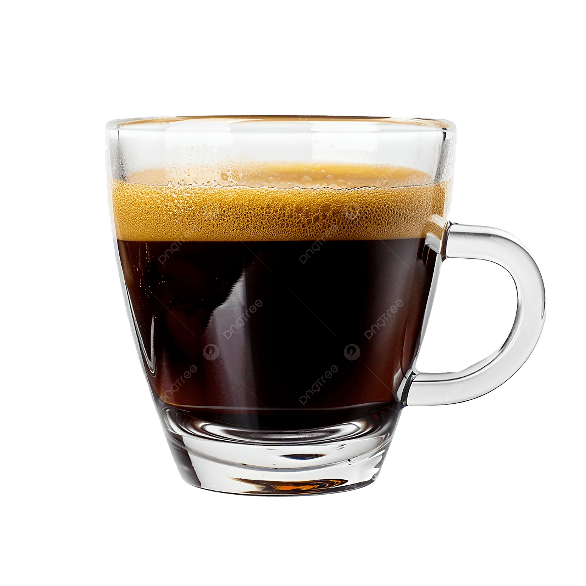

Coffee Double Espresso
₱130.00
A double espresso, or doppio, is a 60ml (2 oz)
concentrated coffee shot extracted using 14–20 grams
of coffee grounds, resulting in a stronger, richer
flavor and higher caffeine content than a single shot.